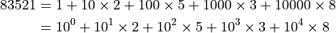
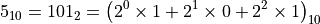
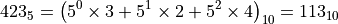
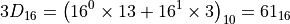
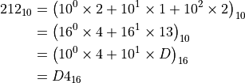

Number Bases¶
Decimal numbers¶
Decimal natural numbers are written in base 10. There are 10 symbols for numbers - 0,1,2,3,4,5,6,7,8,9.
We start incrementing the unit’s place by 1 and when the last symbol (9) is reached, the ten place is incremented by 1 and the unit place is reset to 0. Hence, after 9, we get 10. The cycle is then repeated. Finally, when the ten’s place and the unit’s place both get staturated (reach the last symbol - 9), the hundred’s place is incremented and both the ten’s place and unit’s place are reset to 0. Thus, after 99, we get 100.
Conceptually, a number like 83521 really means

Hence, instead of calling the places as “units”, “tens”, “hundreds” etc., we could call them “power 0 place”, “power 1 place”, “power 2 place” etc.
To identify what basis is being used, we will write as
Numbers in other bases¶
Suppose, we only had 2 symbols for numbers - 0, 1, then our numbers will look like 0, 1, 10, 11, 100, 101, 110, 111, 1000 instead of 0, 1, 2, 3, 4, 5, 6, 7, 8. This case is base 2.
Thus,

In base 5, the numbers will look like 0, 1, 2, 3, 4, 10, 11, 12, 13, 14, 20, 21, 22, …, 44, 100, 101, 102, 103, 104, 110, …, 444, 1000.

When, the base is larger than 10, we need more than 10 symbols. In that case, uppercase letters are used. For base 16, the symbols are 0, 1, 2, 3, 4, 5, 6, 7, 8, 9, A, B, C, D, E, F. Thus, D in base 16 is really 13 in base 10. The numbers look like 0, 1, 2, …, 9, A, B, C, D, E, F, 10, 11, 12, …, 19, 1A, …, 1F, 20, …, EFF, F00, F01, …, FFF, 1000.

The above discussion shows how to convert a number in any base to base 10. How can we do the reverse - convert a number from base 10 to any base?
Converting a decimal number to other bases¶
The concept of the conversion is shown below.

The conversion is actually done by keeping track of remainders while repeatedly dividing by 16.
Divisor |
Dividend (Quotient in the previous step) |
Remainder in base 10 |
Remainder in base 16 |
|---|---|---|---|
16 |
212 |
4 |
4 |
13 |
13 |
D |
|
0 |
The process is continued until the quotient is 0. The remainders in the desired base are then written in reverse (bottom to top) giving 21210=D416.
Another example: Convert to base 
Divisor |
Dividend (Quotient in the previous step) |
Remainder in base 10 |
Remainder in base 16 |
|---|---|---|---|
3 |
168 |
0 |
0 |
56 |
2 |
2 |
|
18 |
0 |
0 |
|
6 |
0 |
0 |
|
2 |
2 |
2 |
|
0 |
16810=200203.